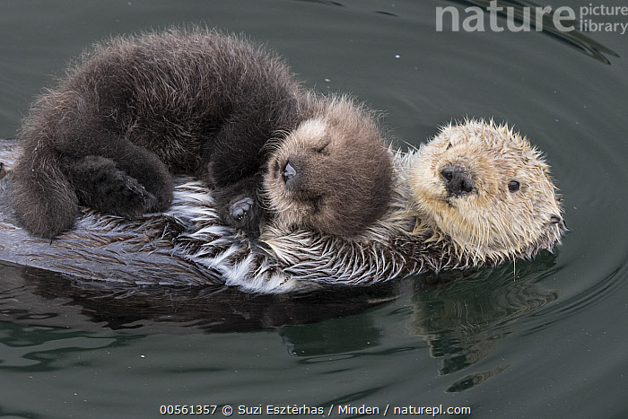
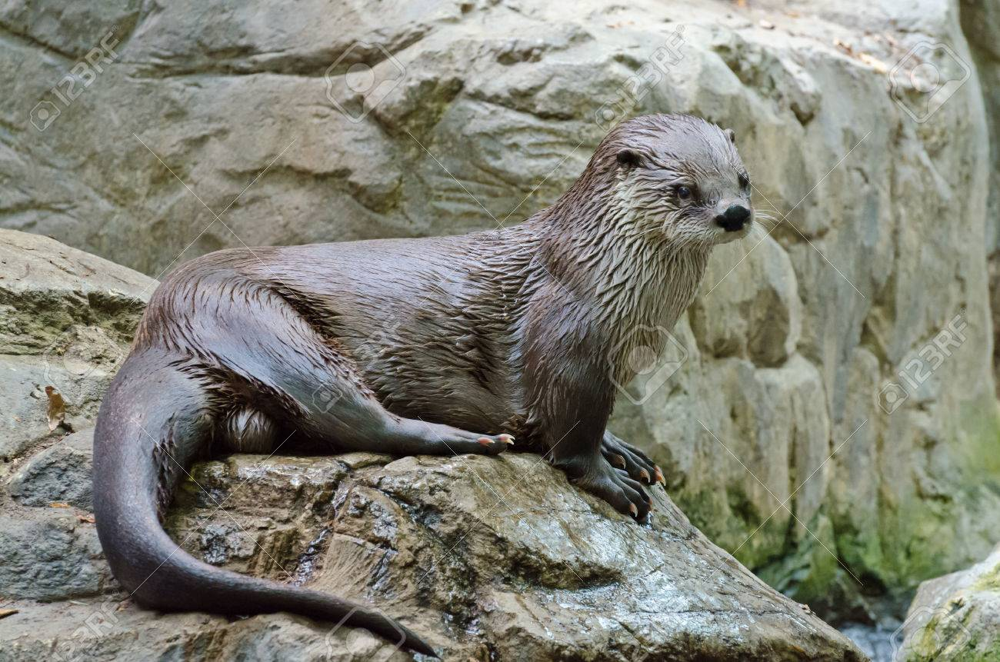
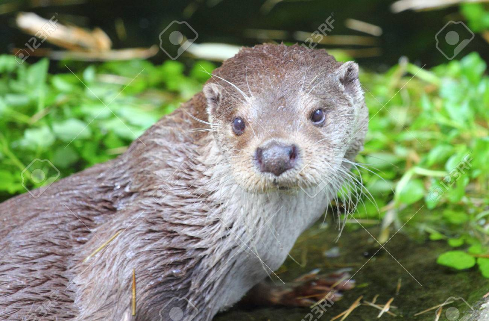
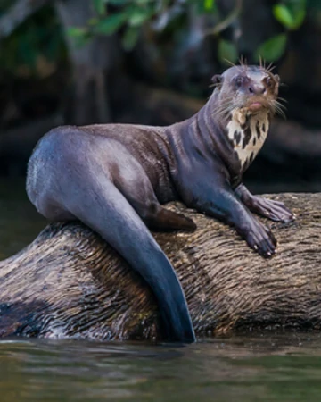

| NOMBRE | DESCRIPCIÓN | IMAGEN |
|---|---|---|
| Nutria marina (Enhydra lutris) | Vive en las costas del Pacífico Norte.
Es una especie muy característica, con una piel muy densa adaptada a las
frías aguas sabáticas.
Es famosa por su costumbre de flotar con el vientre hacia arriba,
sirviéndole de "mesa" donde manipular los erizos marinos que son la
base de su alimentación. Fuente: http://cronicasdefauna.blogspot.com/2019/10/la-nutria-y-las-nutrias.html |  |
| Nutria de río norteamericana (Lontra canadensis) | Inicialmente clasificada bajo el género Lutra, posteriormente se le
asignó el género de todas las nutrias americanas excepto la nutria gigante,
o sea, Lontra. Vive en Norteamérica. Falta en todo el Centro de los EEUU y en las
regiones áridas. Se le reconocen siete subespecies. Fuente: http://cronicasdefauna.blogspot.com/2019/10/la-nutria-y-las-nutrias.html |  |
| Nutria paleártica (Lutra lutra) | Es la nutria del Viejo Mundo de mayor extensión.
Algunos autores consideran que la subespecie japonesa L. l. nippon fue una
especie separada. Esta nutria fue exterminada por el ser humano hacia los años 80
del siglo XX, debido al comercio peletero. Fuente: http://cronicasdefauna.blogspot.com/2019/10/la-nutria-y-las-nutrias.html |  |
| Nutria gigante (Pteronura brasiliensis) | Se trata de uno de los mayores mustélidos, o al menos el más largo de todos
con casi 2 metros de longitud (1,7 - 1,8 m) y un peso típico para los machos de
unos 32 kg. Vive en las cuencas de los ríos Orinoco y Amazonas, en Sudamérica,
donde se alimenta de peces pero secundariamente de crustáceos, tortugas e incluso
pequeños caimanes. Fuente: http://cronicasdefauna.blogspot.com/2019/10/la-nutria-y-las-nutrias.html |  |